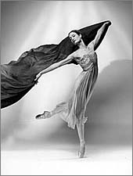
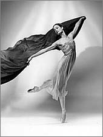
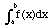
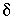

Signs for technical/specialized vocabulary
David Bar-Tzur
Links updated monthly with the help of LinkAlarm.

 

Dinosaur; dance1.
EXPLANATION OF THE GLOSSING SYSTEM
(to understand how I describe the signs in this dictionary).
For content knowledge of how to use the physics terms in context, see Guided tutorial in physics for interpreters.
For negotiating and developing temporary signs, see Preparation and sign negotiation
For vocabulary lists to determine helpful signs for a specific discipline, see Vocabulary lists by topic.
- Dairy Queen
- D-Q. For a QuickTime movie of this sign, see ASL browser - Dairy Queen.
- dam
- (1) WATER + (2h)B-CL, POs towards, FOs ><, hands move upwards to show wall. For a QuickTime movie of this sign, see ASL browser - dam. (2) WATER BLOCK. For a movie of this sign, see Dictionary of Sign (ASL) - dam.
- damn (v), damnation
- (1) [D], PO away, is held high at NDS and moves down diagonally to lower DS. [< Initialization from HELL, which comes from a body (two legs) being thrown into Hell.] (2) PUNISH.
- damnation
- [S] throws the subject downwards, opening to A [5:] + BURN.
- damped (harmonic oscillations)
- _________________t
MOVE'left and right', (2h)[5], PO down, FO away, hands move down in small "damped" movements.
- damping constant
- Draw a lowercase lambda (
 ) in the air.
) in the air.
- dance
- ~
- [V], PO > signer, FO down, is helf over palm of [B], PO up< FO > DS, and hand nods from side to side.
- ~ studio
- DANCE S-T-U-D-I-O.
- Daniel [Heb. Daniel]
- D-A-N.
- dark
- (2h)[B], POs > signer, FOs up, descend pivoting at elbows so that hands cross and FOs ><.
- dark adaptation
- EYES + (2h)F-CL are held at eyes with index fingers at first curled tightly shut, and then open up to show pupils expanding.
- darkcloth
- (1) DARK C-L-O-T-H. (2) (2h)[bX], pull darkcloth over head like a hood.
- dark halo
- H-A-L-O DARK.
- dark matter
- DARK MATTER, where the last sign is (2h)[bO], POs up, FOs away, are held in together in place while thumbs rub against FTs.
- darkroom
- DARK ROOM.
- darkslide
- (1) DARK SLIDE, where the second sign is (2h)[H], POs > signer, FOs ><, DH slides FT over FT of NDH twice. (2) DH [O^], PO > NDS, FO > away, is placed "behind" DH [B], PO > signer, FO > DS, from the perspective of the viewer. In other words, the DH will be closer to the signer.
- darts
- D-A-R-T.
- dashed line
- LINE'dash the line with the DH while the NDH remains in place'.
- data
- (1) D-A-T-A. (2) INFORM++.
- data acquisition and control
- D-A-C.
- data available
- D-A-V.
- data base
- D-B.
- data carrier detect
- D-C-D.
- data circuit-terminating equipment
- D-C-E.
- data encryption standard
- D-E-S.
- data parity error
- D-P-E.
- data processing
- D-P.
- data set
- D-S.
- data set ready
- D-S-R.
- data strobe
- D-S.
- data terminal controller
- D-T-C.
- data terminal ready (protocol signal)
- D-T-R.
- data terminating equipment
- D-T-E.
- data valid
- D-A-V.
- date
- ~ (n, on the calendar)
- D-A-T-E.
- ~ (n, romantic)
- (2h)[D], tap closed FTs together.
- ~ (v), dating
- (2h)[A], hold palms together and shake to and fro.
- dati
- (1) [A], PO > signer is beaten against heart. (2) O-NICE. For a QuickTime movie of this sign, see ASL browser - Orthodox.
- daven
- PRAY.
- David, King
- D-KING.
- David haMelech
- D-KING.
- Davilla, Robert
- Closed fingers of [D] touch NDS of upper chest, then DS. Former Vice President of the National Technical Institute for the Deaf and Interim President of Gallaudet University.
- day care
- (1) DAY TAKE-CARE-OF, where the second sign is (2h)[K], POs down, FOs away, are crossed at wrists and move vertically perpendicular to the chest. (2) D-A-Y C-A-R-E
- Day of Atonement
- DAY + [A dot] strikes DS chest 3x. (<
the sections of the Day of Atonement service where the chest is struck while confessing sins.)
- Day of reckoning
- JESUS #BACK, JUDGE WORLD (WILL).
- Day of the Lord
- JESUS #BACK, CONTROL FROM-NOW-ON (WILL).
- day school
- DAY SCHOOL.
- DC base current (IB)
- I B"subscripted".
- DC collector current (IC)
- I C"subscripted".
- DC voltage base to emitter (VBE)
- V B-E"subscripted".
- DC voltage collector to emitter (VCE)
- V C-E"subscripted".
- deadline
- (1) DUE. (2) DUE D-A-T-E. (3) DUE + [Bb], PO down, wipes across throat like knife. (4) DEAD LINE.
- deaf/Deaf
- ~ (general)
- (1) [1], PO away, FO up, touches close to ear then close to mouth or vice versa. (2) [1] touches ear + (2h)[B], POs down, FOs away, come together.
- ~ (small d)
- NDH [bO] is held against [1], PO away, FO up, to make a lowercase d ["d"] + DEAF.
- ~ (big D)
- DH [bC] is held against [1], PO > DS, FO up, to make an uppercase D ["D"] + DEAF.
- Deafblind
- DEAF BLIND.
- deacon
- ~ (most churches)
- (1) D-KING. (2) D-MEMBER.
- ~ (LDS [Mormon])
- D-E-A-C-O-N.
- deadlock (two competing parties want access)
- (2h)[V:], POs > signer, FOs ><, extended fingers jam into each other and interlock.
- d/Deaf school
- (2h)[I], POs ><, FOs away, DH strikes the top of NDH twice.
- Deaf Smith, Erastus
- DEAF "S".
- deal drugs
- SELL is modulated by being produced multiple times while moving > NDS with puffed cheeks.
- dealer
- ~ (automotive)
- (1) D-E-A-L-E-R. (2) CAR SELL AGENT.
- ~ (business)
- MONEY EXCHANGE AGENT.
- ~ (drugs)
- SELL AGENT. Although "deal drugs" is a modulated form of SELL, "(drug) dealer" is usually not.
- dealership
- D-E-A-L-E-R-S-H-I-P.
- debit
- D-R is made on the left side with left hand (irrespective of dominant hand) to show the standard abbreviation and positioning of debits in accounting.
- debt
- OWE.
- debug
- D-E BUG.
- Decalogue
- Generally people sign TEN COMMANDMENT, but I did see an interpreter for an evangelist on TV sign (2h)[A dot] touch thumbs to the corners of the mouth and move away diagonally to the respective sides, similar to the movement for ANNOUNCE. I have no idea how widespread this is, but it is certainly interesting since it is a kind of number incorporation, [A dot] being the HS for TEN.
- decay
- WORN-OUT, that is, (2h)[A], FOs away, are held together, then separate while supinating and opening to (2h)[5:]. For a QuickTime movie of this sign, see ASL browser - decay.
- decay constant
- Draw a lowercase lambda () in the air.
- decedent
- DIE AGENT.
- deci- (10-1)
- D- [plus unit abbreviation].
- decibels
- D-B.
- decibels - above or below 1 milliwatt
- D-B-M.
- decibels - above reference coupling
- D-B-X.
- decibels - adjusted
- D-B-A.
- decibels - referred to one milliwatt
- D-B-M.
- decibels - voltage
- D-B-V.
- decimal
- ~ (number with a ~)
- SOMETHING PERIOD SOMETHING.
- ~ place
- PERIOD (for the decimal point) and then use G-CL to show each place.
- ~ (system)
- BASE~TEN, that is, DH [Bb], PO away, FO up, is held below NDH [B], PO down, FO > DS, circles horizontally, then HS changes to TEN.
- ~ point
- PERIOD made with FT of [bO].
- binary coded ~
- B-C-D.
- move the ~ point x places to the (left, right)
- Make PERIOD with FT of [bO], the move FT over to the left or right in downward arcs. Finally show number at end such as FOUR for "move decimal point four places".
- deck
- ~ (of a ship)
- SHIP FLOOR.
- ~ (of cards)
- [C], PO away, FO up, taps against palm of [B], PO up, FO away.
- decode
- D-CHANGE.
- decoder
- D-SENTENCE.
- decollatage (low neckline)
- FTs of (2h)[1] or (2h)[B] trace outline from respective sides to center of body.
- decompensation
- Opposite movement of IMPROVE, that is, little finger side of [B] touches upper arm, then moves closer to wrist and touches arm again.
- decompose
- WORN-OUT, that is, (2h)[A], FOs away, are held together, then separate while supinating and opening to (2h)[5:]. For a QuickTime movie of this sign, see ASL browser - decay.
- decomposition
- DECAY.
- decompress (computers)
- (1) Perform the opposite of the sign SUMMARIZE. (2) (2h)[Bb], POs towards signer; DH is held above NDH and touching. The hands separate with the DH moving upwards and the ND downwards while the HSs open to (2h)[4].
- decorate, decorating, decoration(s)
- (2h)[O^], POs away, FOs up, alt. twist as they decorate things in space.
- decrease
- ~
- (2h)[U], POs down, FTs cross with DH on top and then both descend while DH supinates.
- ~ing (function)
- (2h)[U], POs down, FTs cross with DH on top and then both descend in steps while DH supinates multiple times.
- ~ monotonically
- (2h)[U], POs down, FTs cross with DH on top and then both descend in steps while DH supinates multiple times + DECREASE NEVER.
- ~ without bounds
- (2h)[U], POs down, FTs cross with DH on top and then both descend in steps while DH supinates multiple times + STOP NEVER.
- decrement
- ______________________hu
DECREASE'small movement'.
- dedicate
- DH [D] strikes inner wrist against thumb side of wrist of NDH [B], PO down, then change DH to [B] and strike again.
- deduct/ion (sales, Accounting)
- [5:] scrapes down the palm of [B], PO > DS while closing to [A]. For a QuickTime movie of this sign, see ASL browser - deduct.
- deep (anatomy)
- The usual sign for DEEP.
- Deepavali
- NDH [1] touches [5], PO > NDS at heel of palm and DH FT wiggle.
- default
- ~ (computers)
- (2h)[5], POs down, FOs away, move > signer and close hands to (2h)[S].
- ~ on a loan
- BORROW + elbow of DH [S], PO > signer, FO up, is placed on the wrist of [S], PO down, FO > DS, and the DH falls > NDS while the elbow maintains contact, as if the loan was felled like a tree.
- defecate, defecation
- The thumb is pulled out from the bottom of the closed fist. For a QuickTime movie of this sign, see ASL browser - defecation.
- defect, defective
- NO-GOOD, that is [N], PO down, FO away, supinates quickly while changing to [G].
- defective weld
- WELDING NO-GOOD.
- defendant
- (1) DEFEND AGENT. (2) D-DEFEND AGENT.
- defense (sports)
- (1) PROTECT+, that is, (2h)[S], cross at wrists and push forward slightly twice. (2) D-PROTECT+, that is, (2h)[D], cross at wrists and push forward slightly twice. (3) DH [D], NDH [B], cross at wrists and DH taps twice at wrist of NDH. (4) D-WORK.
- Defense Advanced Research Projects Agency
- D-A-R-P-A.
- defensive
- ~ (psychology)
- RESIST+, that is, [S] arm is raised horizontally to fend off something and moves forward slightly twice. For a QuickTime movie of this sign, see ASL browser - defensive.
- ~ (player, sports)
- (1) PROTECT+, that is, (2h)[S], cross at wrists and push forward slightly twice. (2) D-PROTECT+, that is, (2h)[D], cross at wrists and push forward slightly twice. (3) DH [D], NDH [B], cross at wrists and DH taps twice at wrist of NDH.
- defer
- ~ (postpone)
- (2h)[F], POs ><, FOs away, touch FTs, then DH moves forward in upward arcs.
- ~ (relinquish authority)
- (2h)[A], POs down, FOs away, supinate and move towards the person being deferred to.
- deferred
- (2h)[F], POs ><, FOs away, touch FTs, then DH moves forward in upward arcs + FINISH.
- deficit
- OWE.
- defile
- MAKE + [S] is held under chin and opens explosively into a [5) with an appropriately negative facial expression (= FILTHY).
- defiled
- [S] is held under chin and opens explosively into a [5) with an appropriately negative facial expression (= FILTHY).
- define
- (1) MEAN~EXPLAIN. (2) D-EXPLAIN.
- defined
- as in "the function is ~ in such-and-such a region"
- ____________________________rhq
FUNCTION HAVE MEAN+ WHERE? (and then state the region).
- as in "the function is ~ by the following equation"
-
______________________rhq
FUNCTION MEAN "WHAT"? (and then state the equation).
- definite integral of f(x) from x = a to x = b
- DEFINITELY* [I], PO down, travels down in an arc like the shape of an integral sign + (1) "A"'subscripted', "B"'superscripted' (then state the function + D-X). This follows the iconography of the integral: . Note: the first sign looks like the last part of the sign DECIDE but with a sharp movement.
- definition
- (1) MEAN~EXPLAIN. (2) D-EXPLAIN.
- deflation
- COST DECREASE++ traveling down.
- deflection (of a planar material)
- FTs of (2h)[B], POs down, FOs ><, overlap slightly and DH pushes both of them down like the buckling of a bridge.
- defragmentation
- D-E-F-R-A-G.
- defraud
- (2h)[horns], POs down, FOs away, DH contacts the NDH from above and slides past it. For a QuickTime movie of this sign, see ASL browser - defraud.
- degenerate
- (2h)[A], POs ><, FOs away, both hands descend in an antisymmetric, wavy motion.
- degenerate case
- SIMPLEST EXAMPLE.
- degenerate matter
- WORN-OUT MATERIAL, that is, (2h)[A], palmsides pressed together, FO away, move forward while opening to (2h)[5], POs up, FOs away + (2h)[bO], POs up, FOs away, are held in together in place while thumbs rub against FTs.
- degradation, degrade
- Opposite movement of IMPROVE, that is, little finger side of [B] touches upper arm, then moves closer to wrist and touches arm again.
- degree
- ~ (angle or temperature)
- O"superscripted" (o).
- ~ (from a college)
- (2h)[F] or [O], POs away, FOs up, touch side to side, then separate.
- ~ (of an equation)
- D-E-G-R-E-E.
- ~ (of hearing loss)
- AMOUNT, that is, [B] shows mound on palm of NDH [B], PO up, FO away.
- degree of difficulty (Diving)
- D-D.
- degrees Celsius (oC)
- O"superscripted" C.
- degrees Fahrenheit (oF)
- O"superscripted" F.
- degrees Kelvin
- This term was abandoned in 1967. See "Kelvin"
- degrees of freedom
- "D" "F".
- dehydrate, dehydration
- REMOVE WATER.
- dehydrated
- NOT ENOUGH WATER INSIDE.
- Deist
- GOD MAKE WORLD FINISH, LEAVE-ALONE"th".
- deixis
- POINT (2h)alt.POINT-TO"each".
- deka-
- D-A-.
- delay, delayed
- (2h)[F], POs ><, FOs away, touch FTs, then DH moves forward in upward arcs.
- delegate
- ~ (n)
- (1) [D], brushes downwards against NDS of chest. (2) [bC], brushes Ft downwards against NDS of chest. (< the id pins that are worn.)
- ~ (v)
- RESPONSIBILITY, (2h)alt.GIFT-TO"each", where the second sign is (2h)[X], POs ><, FOs away, alt. move forward from elbow as if bestowing gifts.
- de l'Epée, Abée
- [A] twists and moves forward as if holding a sword. (< "epée" which means "fencing sword".)
- delete, deletion
- ~ (of large proportion)
- [5:] scrapes down the palm of [B], PO > DS while closing to [A]. For a QuickTime movie of this sign, see ASL browser - deduct.
- ~ (of small proportion)
- Thumb of [A] flicks against bent index finger as hand moves to side. For a QuickTime movie of this sign, see ASL browser - delete.
- deliver (a baby), delivery
- ~ (from the assistant's perspective)
- (2h)[5:] bring the baby to one's self.
- ~ (from the mother's perspective)
- [S], PO Down, holds fist against palm of [B], PO towards, then slips down it and moves under it and away.
- ~ (us from evil)
- (1) D-FREE. (2) S-FREE.
- deliver (us from evil)
- (1) D-FREE. (2) S-FREE. For an animated gif of this sign, see Animated dictionary of religious signs - Deaf Missions: Save.
- "delsy"
- D-L-C-I.
- delta
- lowercase ~, 
- Draw the shape of the letter in the air with the index finger.
- uppercase ~,

- TRIANGLE.
- delta resonance baryon ()
- TRIANGLE PARTICLE.
- deltoid region
- Trace an inverted triangle (point down) over the muscle that defines the shoulder.
- delusion
- [4], FO up, starts at temple and spirals outward with th + [A], PO away, FO up, strikes back of [1], PO away, FO up + SELF.
- demand (business and General)
- REQUIRE.
- demented
- ~ (dangerous to others)
- (1) MIND WARPED, where the second sign is [B], PO > NDS, is held against [B], PO up, and FTs of DH bend to [B^]. For a QuickTime movie of this sign, see ASL browser - demented.
- ~ (not dangerous to others)
- MIND DETERIORATE, where the second sign is (2h)[A], POs ><, are held side by side and descend in a wavy pattern.
- dementia
- MIND DETERIORATE, where the second sign is (2h)[A], POs ><, are held side by side and descend in a wavy pattern for gradualness or straight down for drastic. For a QuickTime movie of DETERIORATE, see ASL browser - deteriorate.
- democracy
- D-E-M-O-C-R-A-C-Y.
- Democratic party
- "D" P-A-R-T-Y.
- demon
- (1) (2h)[3] touch respective side temples with tips of thumbs and fingers are bent twice. For an animated gif of this sign, see Animated dictionary of religious signs - Deaf Missions: Demon. (2) DH [3] touches DS temple with tip of thumb and fingers are bent twice. For an animated gif of this sign, see Animated dictionary of religious signs - Deaf Missions: Demon.A wicked spirit.
- demonic
- (1) LIKE DEVIL. (2) DEVIL POSS.
- demon possession
- NDH [C], PO > signer, covers the forearm of DH [V:] at the chest as the DH descends wiggling (crawling into) the [C] of the NDH.
- demonstrate, demonstration
- ~ (of a process)
- (1) SHOW. (2) D-SHOW. (3) D-E-M-O.
- ~ (political)
- (2h)[S] hold picket sign and wave it forward slightly. For a QuickTime movie of this sign, see ASL browser - picket.
- demyelinated, demyelination
- [C] travels up arm as it surrounds it (to show the myelin sheath) and the [5:] changes to [S] as it travels back down its surface (to show the removal of the sheath).
- dendrite
- [S], PO down, is held above NDH [5], PO down, FO > DS, and flicks index finger out to show a nerve signal up the axon + [1] traces a circle about the NDH [5] to show that the finger-like structures (dendrites) are meant.
- denial
- (2h)NOT+.
- Denmark
- [3], PO > signer, travels across chest while moving > DS. To see the reference source for the sign(s) for this country or to look up other countries in the same geographical area, see Indigenous signs for countries. To find signs for cities within this country (some have no entries) see Indigenous signs for cities.
- denomination (Religion)
- (1) CHURCH GROUP. (2) CHURCH + (2h)[1], POs down, FOs away from signer, are held side by side and then DH moves > DS in an outward arc.
- denominator
- (1) [1] points to space below the NDH [B], PO down, FO > DS, where the denominator goes. (2) "D" is shaken above the NDH [B], PO down, FO > DS, where the denominator goes.
- denoument
- [Bb], PO down, FO away, rises diagonally with a positive facial expression, then suddenly falls with a negative one.
- dense
- (2h)[C], POs ><, FOs away, are brought together suddenly and with pc.
- density
- "D".
- density wave theory
- "D" W-A-V-E THEORY.
- dental, dentist
- [A dot], PO > back, FO up, is tapped against cheek 2x.
- deny
- (2h)NOT.
- deodorizer (automotive)
- bO-CL'spray area', SMELL BETTER.
- deoxyribonucleic acid
- D-N-A.
- Department of Defense
- D-O-D.
- Department of Education
- D-O-E.
- Department of Transportation
- D-O-T.
- dependency
- (2h)[1], DH FT pushes down NDH FT repeatedly.
- dependent
- ~ (chemically)
- (2h)[1], DH FT pushes down NDH FT repeatedly.
- ~ (for tax purposes)
- (2h)[1], DH FT pushes down NDH FT repeatedly + AGENT.
- dependent variable
- (1) DEPEND+ + V-VARY'small movement'.
(2) WORD + (2h)[Bb], POs down, FOs away, hands are held side by side with NDH held still while DH moves away in a wavy pattern + DEPEND+.
- deploy (air bag)
- (2h)[S], POs away are held side by side at head level, then open to (2h)[5:] while separating slightly and come into contact with face.
- deponent
- GIVE-TESIMONY PERSON, where the first sign is NDH [B] held up as if swearing, and DH [1] circles at lips like the sign SAY or HEARING.
- deposit
- ~ (drift through liquid onto a surface)
- [5], PO down, FO away, is held above [B], PO down, FO > DS, and DH FT wiggle as they descend and strike NDH + [G] runs along palm, FO away, to show layer of a substance. For a QuickTime movie of the second sign, see ASL browser - layer.
- ~ (money)
- (2h)[A dot], POs down, FOs away, hands twist so that thumbs end up pointing down.
- deposit in transit
- DEPOSIT, BANK RECOGNIZE NOT-YET.
- deposition
- ~ (chemistry)
- (1) DEPOSIT"each". (2) DEPOSIT + (2h)5wg-CL'descend in a slow shower'.
- ~ (criminal justice)
- GO-AHEAD TESTIFY. IN COURT, DON'T-MEAN-TO-SAY. These signs may be found separately in this dictionary.
- depreciate, depreciation
- (1) VALUE (1x) SUBTRACT"over time". For a QuickTime movie of the second sign, see ASL browser - discount. (2) D-E-P-R-E-C.
- depressant
- (1) (2h)[5] are held limp-wristed and descend. (2) Can add TAKE-PILL (see "pill" in this dictionary), DRINK, TAKE-SHOT (see "shot"), and so on if the method of delivery is known.
- depression
- ~ (economics)
- (1) ECONOMY (2h)THUMBS-DOWN. (2) (ECONOMY +) [Bb], FO away, PO diagonally down, rushes down, brushing past palm of [B], PO > DS, FO away.
- ~ (psychology)
- (2h)[5], PO > signer, FOs down, push hands down the chest with hu.
- depth
- HOW-MUCH DEEP?
- derivation (of a formula)
- PROVE WHERE FROM.
- derivative
- ~ (calculus)
- [D], PO away, FO up, travels down in an arc like the s-shape of an integral sign (). Note: "differentiate" (which see) is a verb and "derivative" is a noun.
- ~ (chemistry)
- WHERE FROM? + specify the source.
- descend (into Hell)
- [N] touches upturned palm of [B] and then moves >DS in an arc and descends.
- describe, description
- EXPLAIN.
- desecrate
- HOLY, DESTROY.
- desensitization
- (1) The middle finger touches the heart and is then turned away + REMOVE. For a QuickTime movie of the first sign, see ASL browser - sensitive. (2) BECOME + (2h)[5:], POs down, FOs away, cross hands at wrist and descend while changing HSs to(2h)[S].
- desert
- COUNTRY (THEREABOUTS) DESERTED, where the last sign is (2h)[open 8], POs down, circle slightly, then move forward while closing to (2h)[A] and mouthing "thp". The Hebrew word "midbar" is often mistranslated as "desert", but really means "uncultivated and uninhabited land." See this entry.
- desiccator
- DRY BOWL.
- design
- [D], PO > NDS, moves down close to palm of [B] in a wavy pattern.
- desk
- TABLE.
- desktop (computers)
- TABLE TOP.
- DESQview (multitasking program)
- D-V.
- dessert
- (1) (2h)[D], POs ><, FOs up, tap unextended FT together. For a QuickTime movie of this sign, see ASL browser - dessert. (2) (2h)[D], POs ><, FOs away, tap unextended FT together.
- destructive interference
- INTERFER, DECREASE.
- detail
- ~s, in ~
- DEEP"step-by-step".
- ~ (v)
- ~ a car
- CAR, H-PAINT'little strokes' with hu.
- ~ (general)
- EXPLAIN DEEP.
- detective
- FT of [D] makes small circle at NDS upper chest, like a badge. For a QuickTime movie of this sign, see ASL browser - detective.
- detector
- MACHINE NOTICE.
- detention
- PUNISH.
- deteriorate
- (2h)[A], POs ><:, wiggle at wrist as both hands descend for gradualness or straight down for drastic. For a QuickTime movie of this sign, see ASL browser - deteriorate.
- determination
- ~ (criminal justice)
- COURT ANALYZE, DECIDE.
- ~ (general)
- STUBBORN GO-TOWARDS-GOAL, where second sign is like GOAL, but the DH moves in a vertical circles while pointing towards NDH FT.
- determine (a value or measurement)
- DECIDE.
- determinism
- FUTURE SET-UP FINISH.
- detonation
- D-E-T-O-N.
- Deuternomy [Heb. D'varim]
- D-E-U-T.
- Devarim
- D-E-U-T.
- develop (Photography)
- ~ (film)
- (2h)[5:] hold a processing container and shake it like a cocktail.
- ~ (film/print)
- DEVELOP, that is, [Bb], PO down, FO away, brushes against palm of NDH [B], PO > DS, FO away, as it soars into the air.
- ~ (print)
- (2h)[X dot] hold a processing tray and swirl it.
- developer
- ~ (film)
- CHEMICAL FOR (2h)[5:] hold a processing container and shake it like a cocktail.
- ~ (film/print)
- DEVELOP CHEMICAL, where the first sign is [Bb], PO down, FO away, brushes against palm of NDH [B], PO > DS, FO away, as it soars into the air.
- ~ (print)
- CHEMICAL FOR (2h)[X dot] hold a processing tray and swirl it.
- developmentally disabled
- D-D.
- deviant
- ~ (adj)
- (2h)[B], DH is held, PO > NDS, against NDPO up, FO away, and moves forward while DH FT curl > DS and HS become (B^].
- ~ (noun)
- (2h)[B], DH is held, PO > NDS, against NDPO up, FO away, and moves forward while DH FT curl > DS and HS become (B^] + AGENT.
- deviate, deviation
- (2h)[B], DH is held, PO > NDS, against NDPO up, FO away, and moves forward while DH FT curl > DS and HS become (B^].
- device
- (2h)[5:], PO towards, interlace fingers and twist at wrists so that hands appear to be enmeshed gears. For a QuickTime movie of this sign, see ASL browser - machine.
- device input format
- D-I-F.
- Devil
- (1) (2h)[3] touch respective side temples with tips of thumbs and fingers are bent twice. For an animated gif of this sign, see Animated dictionary of religious signs - Deaf Missions: Demon. (2) DH [3] touches DS temple with tip of thumb and fingers are bent twice. For an animated gif of this sign, see Animated dictionary of religious signs - Deaf Missions: Demon.
- devious
- POINT, but produced so that DH at first moves off > DS and then arcs back and touches NDH FT, stick tongue in side of cheek and look away.
- devote
- ~ (oneself to something)
- show regularity, as in "devote oneself to prayer" - PRAY"over time".
- ~ (something to God)
- OFFER-something-TO-God.
- devoted (to God)
- PIOUS.
- devotions
- (1) PRAY. (2) THINK-ABOUT.
- devout
- PIOUS.
- dew
- MOIST, that is, WATER + (2h)[5^], POs up, FOs away, move down slightly twice while closing to (2h)[O^]. For a QuickTime movie of this sign, see ASL browser - dew.
- dharma
- DUTY, that is, D-WORK.
- diagnose
- ~ (automotive)
- ANALYZE, FIND.
- ~ (computers)
- D-CHECK, that is, FT of [D] touches under eye, then closed FT brush against the palm of [B], PO up, FO away.
- ~ (Health)
- (1) ANALYZE++ down, that is, (2h)[V] bend fingers while moving downward. For a QuickTime movie of this sign, see ASL browser - diagnose. (2) D-X. (Medical abbreviation, appropriate for health science students, not for laymen.) (3) ANALYZE, FIND. (3) (DOCTOR) LABEL, where the second sign is FT of [H], PO towards, are drawn horizontally across palm of [B], PO away, FO up.
- diagnosis
- (1) ANALYZE++ down, that is, (2h)[V] bend fingers while moving downward. For a QuickTime movie of this sign, see ASL browser - diagnose. (2) D-X. (Medical abbreviation, appropriate for health science students, not for laymen.) (3) ANALYZE, FIND. (3) (DOCTOR) LABEL, where the second sign is FT of [H], PO towards, are drawn horizontally across palm of [B], PO away, FO up.
- diagnostic (computers)
- D-CHECK, that is, FT of [D] touches under eye, then closed FT brush against the palm of [B], PO up, FO away.
- diagonal
- [B], PO > NDS, FO away, slashes diagonally to the NDS. This can be modified to show the exact context. For a QuickTime movie of this sign, see ASL browser - diagonal.
- diagram
- PICTURE. For a QuickTime movie of this sign, see ASL browser - picture.
- dialogue
- (1) CONVERSATION TAKE-TURNS. (2) TWO-OF-THEM CONVERSATION.
- dial scale
- DH [1], PO away, FO up, is held behind NDH [C], PO > DS, FO up, as if it were the frame to the meter, and the DH twists slightly as if it were the moving needle.
- diameter
- ~ (circle)
- (1) use NDH bC-CL to represent perimeter of the circle and DH 1-CL to draw the diameter from one rim to the imaginary other side. (2) D-I-A.
- long ~ (ellipse)
- LONG + use NDH bC-CL to represent perimeter of ellipse and DH 1-CL to draw the diameter from one rim to the imaginary other side.
- short ~ (ellipse)
- SHORT + use NDH bC-CL to represent perimeter of ellipse and DH 1-CL to draw the diameter from one rim to the imaginary other side.
- diameter (of a sphere)
- [R] , PO down, FO away, travels from center of [C], PO away, FO up, to the palm which represents the sphere's surface.
- Diamonds
- ~ (card suit)
- "D".
- "One of ~" . . . "Ace of ~"
- ONE (with PO away) + "D" (as described above), and so on for the numbers. After "10", sign "J" for "Jack", "Q" for "Queen", "K" for "King", and "A" for "Ace". The number or letter can be shown on the NDH and the DH can sign "D".
- diaper
- (2h)[3] close like the sign NO at the respective sides of the hips, as if closing pins at each side of a diaper.
- diaphragm
- ~ (birth control device)
- (1) RUBBER (which see) + (2h)C-CL'disk' + [O^] inserts FT from below into [O], PO > DS. (2) (2h)[L], PO down (roughly) tap index to index and thumb to thumb twice + with NDH [L] from previous sign still held in place, sign RUBBER and use [bC] to insert diaphragm into vagina.
- ~ (body part)
- (2h)[B], POs up, are held at abdomen, overlap FT slightly, and FTs push up twice.
- diarrhea
- [5] rubs thumb against the pinkie side opening of [A dot] repeatedly. For a QuickTime movie of this sign, see ASL browser - diarrhea.
- Diaspora
- ~ (the event or process of dispersion)
- JEWISH SPREAD-OUT.
- ~ (Jews outside Israel)
- JEWISH PEOPLE OUTSIDE ISRAEL.
- dice
- ~ (n)
- [S], PO up, rolls dice. For a QuickTime movie of this sign, see ASL browser - dice.
- ~ (v, Culinary Arts)
- (2h)[B], DPO > NDS, DFO away, NDPO up, NDFO away. DH chops at palm of NDH while moving > DS, then chops again, but this time DHPO is > signer.
- dictator
- (2h)[X], POs away, FOs > respective sides, alt. move > signer and away, like CONTROL but with a smug facial expression.
- dictionary
- [D], PO down, circles while brushing the palm of [B], PO up, FO away.
- Didache (Teaching of the 12 Apostles)
- TWELVE FOLLOW TEACH.
- dielectric constant
- Draw a lowercase kappa (
 ) in the air.
) in the air.
- dielectric flux
- Same as the sign psychology (some people start this sign with THINK, in which case I mean the later half of the compound.)
- diet
- ~
- (1) [D] taps closed FT against dorsal (back) side of [B] which is held in front of mouth. To see a series of stills for this sign, go to "diet" ASL American Sign Language. (2) [D] zips mouth closed. To see a series of stills for this sign, go to "diet" ASL American Sign Language.
- ~ pills
- (1) MEDICINE FOR + (2h)[B], POs ><, FOs away, rush together. (2) (2h)[U], POs down, FTs cross with DH on top and then both descend in steps while DH supinates multiple times + MEDICINE.
- difference (between two numbers)
- You will need to restructure this. For example, "the difference between 12 and 7", you need to sign TWELVE SUBTRACT SEVEN.
- differential (calculus)
- D-I-F-F. Note: not the same as differentiate!
- differential (as in ~ diagnosis)
- DIFFERENT alt.INDEX.
- differential phase shift keying
- D-P-S-K.
- differential rotation (such as in the sun)
- ROTATE DIFFERENT++-up. 5:-CL'edge of sun', 1-CL'fast at center + zz, then slow at top + mm.'
- differentiate
- ~ (calculus)
- CALCULATE DERIVATIVE. Note: "differentiate" is a verb and "derivative" is a noun.
- ~ (general)
- SHOW (or NOTICE) DIFFERENT + (2h)alt.INDEX'the things being differentiated'.
- differentiation (Astronomy)
- SEPARATE, FOLLOW "D".
- diffraction
- DH 1 moves to space between fingers and thumb of NDH B, and change to 5 as it passes through.
- diffraction fringe
- NDH [B], PO > signer, FO up, is held near face level, DH [1], PO down, FO away, travels between the index fingver and thumb of the NDH as if entering a slit and when it arrives, changes from a [O^] to a [5^] as if spreading into a diffraction pattern + with the NDH still held in place, the [4], PO > signer, makes an arc over the NDH to show the fringes.
- diffuse, diffusion
- [5], PO down, FO > NDS, flutters fingers while traveling between the index finger and middle finger of [5], PO > DS, FO away.
- diffused metal-oxide semiconductor
- D-M-O-S.
- digest, digestion
- (2h)[A], DHPO down, NDHPO up, DH circles while in contact with NDH from above, like WASH-DISHES, and teeth are tapped against each other as if chewing.
- digit
- (1) NUMBER. (2) D-I-G-I-T. (3) PLACE, as in "six digit number" -> NUMBER HAVE SIX DIFFERENT PLACE, G-CL'show the places'.
- digital
- (1) D-I-G-I-T-A-L. (2) Sign 1-0-1-0-1-0-1-0-1-0 moving > DS by simply using a "D" and then closing to an "O", more exactly D-O-D-O-D-O-D-O moving > DS. (3) D-NUMBER.
- digital audio tape
- D-A-T.
- Digital Equipment Corporation
- D-E-C.
- digital multimeter
- D-M-M.
- digital signal processing
- D-S-P.
- digital storage oscilloscope
- D-S-O.
- digital subscriber line
- D-S-L.
- digital-to-analog
- [D] touches thumb of [L], PO > signer, FO > DS, then DH changes to [A] and touches index finger of NDH.
- digital-to-analog converter
- D-A-C.
- digital voltmeter
- D-V-M.
- dildo
- FALSE PENIS.
- dilute
- ~ (adj)
- WEAK.
- ~ (v)
- MAKE WEAK.
- dim (stage lighting)
- DARK but hands cross and don't descend fully + (2h)[5^], POs down, FOs away, descend from above and almost close to (2h)[O^] but still keep FTs somewhat open with hu.
- dimension
- (1) (2h)[Y], POs down, FOs away, tap thumbs together. (2) "D".
- dimmer (stage lighting)
- (2h)[F], POs down, FOs away, NDH pulls switch away, DH pulls switch towards + (2h)[5^], POs down, FOs away, descend from above and almost close to (2h)[O^] but still keep FTs somewhat open.
- dinosaur
- (1) Put elbow of [O^] on dorsal (back) side of [B] like half of TABLE and swing DH like the head of a dinosaur. (2) (2h)[3:] are held at chest with thumbs touching it and rock alt. up and down while thumbs remain in place. (3) [D] marches by face. To see a series of stills of this sign, go to "dinosaur" ASL American Sign Language.
- diocese
- (1) D-PLACE. (2) BISHOP AREA.
- diode
- ~
- (2h)[CD], POs ><, FOs up, tap at wrists twice.
- light emitting ~
- L-E-D.
- diode transistor logic
- D-T-L.
- diploid
- TWO "N".
- diploma
- (2h)[F] or [O], POs away, FOs up, touch side to side, then separate.
- direct
- ~ (control)
- (1) CONTROL. (2) D-CONTROL.
- ~ (not indirect)
- STRAIGHT.
- direct access storage device
- D-A-S-D.
- direct current
- D-C.
- directerix (parabola, general and opens up)
- NDH [bC], PO up, FO > NDS, DH [I] draws a horizontal dashed line under the NDH where the directerix should be.
- directerix (parabola, opens down)
- NDH [bC], PO down, FO > DS, DH [I] draws a horizontal dashed line over the NDH where the directerix should be.
- directrix (parabola, opens left)
- Right hand [bC], PO > NDS, FO up, left hand draws a vertical dashed line where the directerix should be.
- directrix (parabola, opens right)
- Left hand [bC], PO > DS, FO up, right hand [I] draws a vertical dashed line where the directerix should be.
- direct examination (trial)
- VERY-FIRST (2h)alt.ASK, where the first signs is [1], PO down, FO away, supinates like the sign FIRST, but strikes the thumb of NDH [A dot], PO > DS, FO away.
- direction (physics)
- (2h)[1], FOs away, DH is placed on top of NDH, and DH slides along NDH while moving away.
- directional
- WHICH WAY, IMPORTANT.
- directional signals
- (2h)[O^], PO > front, left hands opens to [5^] repeatedly like a strobe light, then right hand does the same, as if one directional signal were on and then the other.
- directly proportional
- STRAIGHT PROPORTIONAL.
- direct memory access
- D-M-A.
- direct memory address
- D-M-A.
- director
- D-CONTROL AGENT.
- directory
- [D] circles while brushing the palm of [B], PO up, FO away.
- dis- (negation)
- NOT.
- disability
- (1) D-A. (2) D-INTERRUPT, that is, [D]shoves wrist into the crook between the thumb and forefinger of [B], PO down, FO > DS. (3) D-FORBID, where the last sign is DH [D] and NDH [B], POs ><, FOs up, strike palms and separate forcefully.
- disable (computers)
- PREVENT.
- disabled
- (1) D-INTERRUPT. (2) D-A.
- disassociate (Jehovah's Witness)
- BELIEVE RIGHT, + NDH [1] PO > DS, FO up, DH [S], PO > signer, FO > NDS, DH is held with back of hand against NDH and flicks open to a [1], while moving towards NDS and mouthing "po".
- discernment
- PRAY ANALYZE-self DECIDE.
- discharge
- ~ (gas from cylinder, automotive)
- Hands are held in the final position of HIT and the index finger of the DH is flicked out.
- ~ (electricity)
- ~ (general)
- Hands are held in the final position of HIT and the index finger of the DH is flicked out.
- ~ (battery)
- DH [C], PO down, is held against NDH [B], PO
down, and DH closes to an [O^] with thumb still touching NDH to show
the decrease in power.
- ~ (from the body)
- ~ (general)
- Use FT of 4-CL to show point of origin of discharge and direction. If the point of origin is not mentioned use FT of NDH [1].
- ~ from penis
- NDH [1], PO > DS, FO away, represents penis and DH [4], PO > signer, FO > NDS, moves down to show point of origin of discharge and direction.
- ~ from vagina
- NDH [L], PO > signer, FO down, represents vagina and DH [4], PO > signer, FO > NDS, moves down to show point of origin of discharge and direction.
- disciple
- (1) (2h)[D], FOs up, with DH behind NDH, move forward with downward arcs. (2) FOLLOWER. For an animated gif of this sign, see Animated dictionary of religious signs - Deaf Missions: Disciple.
- discipline
- ~ (n)
- (1) PRACTICE. (2) D-PRACTICE.
- ~ (v)
- PUNISH.
- disclosure
- ~ (business)
- INFORM.
- ~ (personal)
- (2h)[A] hold coat closed and then open it with mm.
- discoloration
- COLOR WRONG.
- disconnect
- (2h)[F] interlinked, open to (2h)[5] while separating.
- discount
- [5:] scrapes down the palm of [B], PO > DS while closing to [A]. For a QuickTime movie of this sign, see ASL browser - discount.
- discrete
- ~ (not continuous)
- SEPARATE"each", could add SMOOTH NOT.
- ~ (not a gossip)
- The index finger flicks out to the side of the mouth to show words coming out the side of the mouth as if telling a secret about someone. + NOT. For a QuickTime movie of the first sign, see ASL browser - rat.
- discriminant
- Follow the notation used on the board or in the book, which is probably either (1) uppercase D:
____pc
"D"--->
[bC]-CL
or (2) uppercase delta (): TRIANGLE.
- discriminate, discrimination
- ~ (distinguish)
- Depends on which of the senses is being referred to: for discrimination in hearing, sign HEAR DIFFERENT (2h)alt.INDEX CAN; for sight, sign SEE DIFFERENT (2h)alt.INDEX CAN; and so on. If the sense is not specified, use SENSE DIFFERENT (2h)alt.INDEX CAN.
- ~ (Sociology)
- (1) Closed FTs of [D] make an "X" on palm of [B], PO > DS. For a QuickTime movie of this sign, see ASL browser - discriminate. (2) FT of [1] makes "X" on [B], PO towards.
- discus
- D-I-S-C-U-S + [A] with hand bent back at wrist releases the discus.
- disease
- ~
- (2h)[open 8], DH touches forehead and NDH touches stomach twice.
- catch/get/acquire a ~
- DH [5], PO > signer, FO away, moves towards NDH and touches it with thumbside of hand while closing to an [8].
- diseconomies of scale
- D-I-S "E" "S".
- disempower
- Some people sign POWER as [C], held above NDS bicep with it PO > it. This [C] is then moved so that the PO is > whoever is being empowered and then suddenly whisked away while closing to [S].
- disequilibrium
- (2h)[B^], POs ><, FOs up, move alt. up and down slightly, and then one side suddenly rises while the other falls, showing a disequilibrium with th.
- dish reflector
- DH [1] touches [C], PO away, at wrist and NDH sweeps back and forth like a radar dish. With NDH held in place from before, DH bounces [O^] against palm, which becomes a [5^].
- disinfect
- MAKE CLEAN*.
- disintegration constant
- Draw a lowercase lambda () in the air.
- disjoint (cycle or function)
- DISCONNECT.
- disjunction
- DH [1] draws inverted "U" in air.
- disk
- ~ (computers)
- [D] circles [B], PO up.
- ~ (general classifier)
- (2h)bC-CL, or (2h)H: dot-CL if slightly thicker.
- ~ (spine)
- (2h)[3:], POs ><, DH is held above NDH and rises to show the spine, then with the NDH still in place, DH [Bb], PO down, FO away is inserted between the bent fingers.
- disk component (Astronomy)
- FLAT + U:-dot'disk'.
- diskette
- FLEXIBLE + [D] circles [B], PO up.
- disk operating system
- D-O-S.
- Disney, Walt
- [W] then [D], both with PO away, strike back of [S], PO down. For a QuickTime movie of this sign, see ASL browser - Walt Disney.
- disobey
- THINK REBEL. For a movie of this sign, see Dictionary of Sign (ASL) - disobey.
- disorientation
- MIND TEND CONFUSED.
- dispensation
- ~ (ecclesiastical forgiveness)
- (1)CHURCH EXCUSE. (2)CHURCH + EXCUSE is signed the normal way for the person's hand dominance and then the sign is executed as if the person had the opposite hand dominance.
- ~ (Divine time period)
- GOD 'S TIME-PERIOD.
- disperse
- SPREAD.
- displacement
- ~ (computers)
- D-FAR, that is, (2h)[D], FOs up, touch FTs, then DH moves away in a n upward arc.
- ~ (distance between the final position and the initial position)
- [Y], PO away, FO > NDS, taps thumb on backhand of [B], PO down, FO > DS. Note: Don't sign something like HOW-MUCH MOVE, because a great deal of movement can equal no displacement if the object comes back to the same place from which it started.
- ~ (movement, as in "the particle experiences a ~")
- MOVE.
- ~, theology of
- GOD PICK-us US, REPLACE JEWISH.
- display
- D-SHOW.
- disposable income
- (1) SPEND CAN+ INCOME. (2) USE CAN+ INCOME.
- disqualified (player)
- (1) Mime GET-OUT with [A dot]. (2) [S], PO > NDS, FO up, moves forward and opens to [5] as if throwing player away. (3) DELETE, that is, [5:] scrapes down the palm of [B], PO > DS while closing to [A]. For a QuickTime movie of this sign, see ASL browser - deduct. (4) D-Q. (5) D-I-S-Q.
- disrupt equilibrium
- EQUILIBRIUM THROWN-OFF, that is, (2h)[B^], POs ><, FOs up, move alt. up and down slightly + (2h)[C], DH PO down, NDH PO up, FOs away, move upwards a bit while reversing POs.
- dissipate (heat gas, etc)
- ~ (by itself)
- SPREAD SOLVE.
- ~ (to cause to ~)
- FORCE SPREAD SOLVE.
- dissociate (Chemistry)
- SEPARATE (<) POSITIVE, (>) NEGATIVE.
- dissociate (Psychology)
- WORLD, DISCONNECT.
- Dissociative Identity Disorder
- D-I-D
- dissolve
- (2h)[O^], FOs up, are held together, then separate in a downward arc while changing to (2h)[A]. For a QuickTime movie of this sign, see ASL browser - dissolve.
- dissolve unit
- (1) DISSOLVE BOX. (2) DISSOVE U-N-I-T. (3) DISSOLVE MACHINE.
- dissonance
- ~ (acoustics)
- SOUND'negative face' BOTHER.
- ~ (psychology)
- MIND CONFLICT++.
- distal (anatomy)
- NDH [B], PO down, FO away, holds hand out and DH points under the arm and away from the torso and moves repeatedly away from it.
- distance
- (2h)[A], FOs away, are held together and DH moves forward in an upward arc. For a QuickTime movie of this sign, see ASL browser - distance.
- distance formula
- HOW-MUCH (2h)[A], POs touching, FOs away, DH
arcs upwards and lands some distance from the NDH + F-LAW.
- distance indicator (Astronomy)
- DISTANCE SHOW+.
- distill
- EVAPORATE SUMMARIZE.
- distillate
- [5], PO down, FO away, touches backhand of [B], PO down, FO > DS, then DH flutters fingers as it ascends to show evaporation + (2h)[5] signs LEAVE + [1] index the chemical that is left behind.
- distinguish
- SHOW (or NOTICE) DIFFERENT + (2h)alt.INDEX'the things being differentiated'.
- distortion (of signal)
- EXAGGERATE.
- distribute
- (2h)alt.GIVE-TO"each", where the [X] form of GIVE-TO is utilized.
- distributed
- SPREAD.
- distributee
- GET AGENT.
- distributions (finances)
- (2h)alt.GIVE-TO"each", where the [X] form of GIVE-TO is utilized.
- distributive
- SPREAD.
- district (general and LDS [Mormon])
- D-GROUP.
- district leader (LDS [Mormon])
- D-GROUP LEADER.
- district president (LDS [Mormon])
- D-GROUP PRESIDENT.
- dive
- ~ (from a springboard)
- (1) (2h)[U], NDHPO down, FO > DS, like diving board, DH stands on board and dives without board flex or leg flex. (2) (2h)[B] are held together and mime movement of hands diving into the water.
- ~ (scuba)
- WATER + V-CL dive past B-CL. For a QuickTime movie of this sign, see ASL browser - skin diving.
- diverge, diverging
- (2h)[B], POs ><, FOs away, move forward diagonally from their respective sides with FTs growing further and further apart.
- divide
- (2h)[B], PO ><, DH is held above NDH ad hands cross at the middle. Both hands separate, pronate, and move down.
- ~ both sides by
- DIVIDE (2h)alt.INDEX"both sides" + the number or expression that is in the denominator is placed under NDH [B], PO down.
- dividend
- ~ (from an investment)
- BENEFIT.
- ~ (in long division)
- Left hand [L], PO away, FO > DS, is held out like the symbol for long division, then the right hand [1] points to the position of the dividend inside the "L". This is true despite handedness because of the shape of the long division symbol.
- divination
- PREDICT HOW? MAGIC. If a specific method is being discussed, substitute the method. Such as "astrology": PREDICT HOW? STAR SCADS-OF STUDYwg-stars.
- divine
- (1) GOD 'S. (2) D-CLEAN. (3) "H" CLEAN. (4) H-CLEAN. (5) D,B-CLEAN. (6) GOD INFLUENCE. For a movie of this sign, see Dictionary of Sign (ASL) - divine.
- Divine Being
- GOD.
- Divine calling
- (GOD +) NDH [B], PO down, FO > DS, DH [B^], PO > signer, touches back of NDH and moves away while closing to [A dot] (=CALLED-BY-God).
- Divine Presence
- GOD GO-TOGETHER US.
- Divine Providence
- (1) GOD SUPERVISE. (2) GOD TAKE-CARE-OF.
- diving
- ~ (from a springboard)
- (1) (2h)[U], NDHPO down, FO > DS, like diving board, DH stands on board and dives without board flex or leg flex. (2) (2h)[B] are held together and mime movement of hands diving into the water.
- ~ (scuba)
- WATER + V-CL dive past B-CL. For a QuickTime movie of this sign, see ASL browser - skin diving.
- division (as a mathematical operation)
- DIVIDE++.
- divisor
- Left hand [L], PO away, FO > DS, is held out like the symbol for long division, then the right hand [1] points to the position of the divisor to the left of the "L". This is true despite handedness because of the shape of the long division symbol.
- divorce
- (1) (2h)[D], FOs up, touch closed FTs and then separate while pronating. (2) Thumb and index (or middle) finger grasp imaginary ring on ring finger and pick it up and throw it away. (3) MARRIAGE DISSOLVE.
- Divrei HaYamim Aleph
- FIRST C-H.
- Divrei HaYamim Beis or Beit
- SECOND C-H.
- dizziness
- The right "claw" hand faces in at head level and moves in counterclockwise circles a few times.
- DNA
- D-N-A. If useful, add "double helix" as described below.
- do (calculate) it in your head
- CALCULATE WITHOUT PAPER, MULL-OVER, where the last sign is (1h) or (2h)[O] is held at forehead and fingers pill-roll, that is fingers tremble against the thumb.
- docile
- (2h)[1], FOs up, DH at lips and NDH in front, descend and change to (2h)[Bb]. For a QuickTime movie of this sign, see ASL browser - docile.
- doctor
- ~ Medical
- It's preferable to use an [M] to tap the wrist rather than a [D].
- Dr. (as a title)
- D-R, not DOCTOR, when used with a name, such as "Dr. Jones", even if this person is a medical doctor.
- doctorate
- P-H-D.
- doctrine
- (1) BELIEVE. (2) D-TEACH. (3) TEACH.
- document
- ~ (n)
- (1) (OFFICIAL) PAPER. (2) D-WRITE. For a QuickTime movie of this sign, see ASL browser - document. (3) D-O-C.
- ~ (v)
- [O^] touches FTs to [B], PO up, then changes to [B] and touches NDS palm to palm.
- documentary
- D-O-C.
- documentation
- [O^] touches FTs to [B], PO up, then changes to [B] and touches palm to palm.
- dogma
- (1) BELIEVE. (2) D-TEACH. (3) TEACH.
- Dogmatics
- CHRIST TEACH.
- dog tracking (automotive, when the tires don't line up when moving forward, but one pair are offset the way a dog trots)
- LIKE DOG (2h)V:-CL'NDH is behind DH but not directly so that the fingers of one hand are slightly offset relative to the other hand.
- dolly-in
- (2h)[B], POs ><, FOs away, move > signer.
- dolly-out
- (2h)[B], POs ><, FOs away, move away from signer.
- dolphin
- (1) NDH [B], PO down, FO > DS, is held up as in TABLE and DH [D] PO down, FO > NDS, move > NDS in a wavy pattern like a dolphin jumping in and out of the water. (2) [R dot], that is, a combination of [L] and [R], PO > signer, FO > NDS, hand moves in a wavy motion > NDS as if riding the waves.
- dolphin style (Swimming)
- (1) (2h)[Bb], flip hands down at wrist, raise them, flip them back and descend. (2) [U] nods at wrist while traveling > DS in wavy pattern.
- domain
- (D-O-M-A-I-N) +
[B], PO > NDS, sweeps lf & rt along x-axis
L-CL----------------------------------------->
- domain of definition
- __________t ___________________q
FUNCTION, HAVE MEAN+ WHERE
___________________________________q
[B], PO > NDS, sweeps lf & rt along x-axis?
L-CL------------------------------------------>
- dome
- (2h)[5:], POs down, FOs away, start at top of dome and descend to respective sides.
- dome light
- [O^], PO > head, is held over head and opens to [5^].
- Dome of the Rock (قبة الصخرة) - Famous golden domed "mosque" in Jerusalem
- [5:], PO down, touches top of [B], PO down, FO > DS, then DH rises. For a film of this Saudi sign, click on Dome of the Rock.
- domestic violence
- (1) FS, later D-V. (2) AWFUL HAPPEN HOME (index location with NDH).
- dominance, dominant
- ~
- (2h)[A], FOs away, DH starts below NDH and arcs around it until it is on top.
- incomplete (~, Genetics)
- FULL NOT.
- Dominican Republic
- (1) [D], PO > signer, touches chin, then ascends while changing to [R] and touches forehead. (2) D-R. To see the reference source for the sign(s) for this country or to look up other countries in the same geographical area, see Indigenous signs for countries. To find signs for cities within this country (some have no entries) see Indigenous signs for cities.
- donate
- ~ (general)
- GIFT-TO, that is, (2h)[X], POs ><, FOs up, move away and down with a slight downward twist of the wrist. This can be (1h).
- ~ (blood)
- DRAW-BLOOD (see entry) + GIFT-TO (see previous entry).
- don't mean to say
- [1], PO > NDS, FO up, is brought to mouth with pl.
- dope (marijuana)
- (1) [bO] holds joint to mouth and moves rapidly back and forth twice while inhaling. (2) [F] is held at mouth and moved as if rapidly toking (smoking a joint). For a QuickTime movie of this sign, see ASL browser - marijuana. (3) [W] or [M] taps FT against NDH bicep. (4) [M] taps top of extended finger of [1], PO > signer, FO away. (5) [T] taps thumbside against mouth. James Woodward in Signs of drug use comments that only people who don't smoke marijuana use this sign.
- Doppler effect
- D-O-P-P-L-E-R EFFECT.
- Doppler shift
- D-O-P-P-L-E-R CHANGE.
- dorsal side of hands (or dorsum)
- Hold out (2h)[5], POs down, FOs away, descend slightly with abrupt motion + run DH palm against NDS dorsum (back of hand) and vice versa.
- dorsal side of foot (or dorsum)
- Poke [1^], PO down, FO away, > the foot + (2h)[B], DH rubs palm against dorsum (back of hand) of NDH, PO down, FO away.
- dots per inch
- D-P-I.
- double (baseball)
- DH [K], PO up, pronates and touches midpalm of NDH [B], PO up, FOs away, with middle finger.
- double arrow (Chemistry)
- A-R-R-O-W + left hand points to right side and right hand points to left side + BOTH.
- double beam balance
- DOUBLE + with NDH still in place move DH [2], FO > NDS, PO down, > DS + BALANCE.
- double cast (signers and speakers)
- DOUBLE PERFORM, (<) GROUP, (>) GROUP.
- double-click
- [X] clicks twice on palm of ND [B] as if it were a key.
- double density (floppy disk)
- D-D.
- double entry method
- DOUBLE PUT-DOWN M-TRY.
- double-exhaust model (Astronomy)
- DOUBLE EXHAUST MODEL, where the second sign is NDH holds onto wrist of DH [S], which opens suddenly to [5].
- double helix
- SHAPE, (2h)[V], PO alt. pronate and supinate while separating.
- double-lobed radio source
- DOUBLE (2h)LOBE (looks like MORE with one movement) RADIO START PLACE.
- double play
- D-P, but with sharp flicking movement.
- double pole double throw
- D-P-D-T.
- double promoted
- DOUBLE ADVANCED, where the second sign is (2h)[B^], POs ><, FOs up, move upwards arcing towards the signer. For a QuickTime movie of this sign, see ASL browser - advanced.
- double sided (floppy disk)
- D-S.
- douche
- (1) VAGINA + index finger is inserted into the pinkie side of [S]. (2) VAGINA, WATER CLEAN.
- doughnut
- (2h)[R], FOs up, touch respective cheeks and then each makes a quarter circle around face until they meet. For a QuickTime movie of this sign, see ASL browser - doughnut.
- doula (birth and baby care tutor)
- D-O-U-L-A.
- down
- ~ (quark)
- "D" PARTICLE.
- ~ (sports)
- [A dot] points thumb down and descends.
- ~ (stage lighting)
- DARK but hands cross and don't descend fully + (2h)[5^], POs down, FOs away, descend from above and almost close to (2h)[O^] but still keep FTs somewhat open with hu.
- downers
- (1) [A dot] is held with thumb pointing down and descends slightly twice. (2) Can add TAKE-PILL (see "pill") + (1).
- downflow (Heating and Cooling)
- (2h)[O^], POs away, are lowered from on high side by side and then separate several times while opening to (2h)[5^].
- downhill skiing
- (2h)[X], POs up, FOs away, move away and down as if going down a slope.
- downhill ski slope
- (1) [B], PO down, traces outline of slope. (2) S-L-O-P-E.
- download
- (2h)[4], right hand PO up, left hand PO down, moves at a diagonal downwards towards the left side repeatedly.
- down payment
- (2h)[A dot], POs down, overlap thumbs, then separate while moving down diagonally. For a QuickTime movie of this sign, see ASL browser - down payment.
- Down's syndrome
- [D] touches temple, [S] touches chin.
- down stage
- ~ (command)
- Move [1] diagonally > NDS and down, pointing in the same direction.
- ~ (location)
- Fingerspell D-S while moving hand diagonally > body and down.
- downstream (computers)
- START PLACE (2h)[5], POs down, wg while moving away from signer.
- downtime
- (1) (1h)THUMBS-DOWN TIME. (2) (1h)THUMBS-DOWN TIME-PERIOD, where the second sign is, [T], PO > NDS, FO up, travels in a vertical plane parallel to the NDH and makes contact with NDH [B], PO > DS, FO away.
- down weld
- [L], PO > NDS, FO away, runs down the side of the index finger in [B], PO away, FO up.
- d'rabbanan
- LONG-AGO RABBI GROUP INVENT LAW.
- draft
- ~ (draw)
- (1) (2h)[Y], POs down, FOs away, touch FTs and twist antisymmetrically while maintaining contact. (2) FT of [I] draws a "straight line" against the outside edge of [B], PO down, FO > DS. For a QuickTime movie of this sign, see ASL browser - drafting.
- ~ (HVAC)
- D-R-A-F-T.
- ~ (of a paper)
- ROUGH.
- ~ beer
- NDH [C] holds imaginary glass and DH [S] pulls back handle on draft tap and brings back to initial position.
- draft diverter (HVAC)
- D-R-A-F-T + [B^] moves forward and then curves around > NDS.
- drafting
- (1) (2h)[Y], POs down, FOs away, touch FTs and twist antisymmetrically while maintaining contact. (2) FT of [I] draws a "straight line" against the outside edge of [B], PO down, FO > DS. For a QuickTime movie of this sign, see ASL browser - drafting.
- drag
- ~ (a mouse)
- [open 8] is held down on ND [B] as if it were a key and both hands move together as if dragging a file or icon.
- ~ queen
- (1) D-GIRL. (2) [5^], PO up, spirals down from side of head, like a wig.
- dragon
- [5^] is held at mouth and wiggles fingers while moving away twice.
- drain
- ~ (n)
- NDH O-CL represents the opening of the drain and DH 4-Cl shows fluid flowing out the bottom of it.
- ~ (v)
- FORCE + NDH O-CL represents the opening of the drain and DH 4-Cl shows fluid flowing out the bottom of it.
- d'raita
- LAW DIRECT FROM TORAH.
- drama
- PERFORM.
- dramatic action
- ACT HAPPEN"each".
- dramatic time
- PERFORM SELF-INDEX (see entry) TIME-PERIOD.
- dramatize
- ACT SHOW"all".
- drasha
- LECTURE.
- draw
- ~ (a picture)
- [I], PO > signer, moves repeatedly down palm.
- ~ (for order in sports)
- PICK.
- ~ (tie)
- (1) (2h)[bO], circle each other and then separate as if tying a ribbon. (2) (2h)[B^], POs ><, FOs up, knock FTs together once.
- draw blood
- (1) [5^], FT towards inside of elbow, hands from inside elbow > DS while closing to [O^]. (2) [L] touches index finger to inside of elbow and withdraws it while bringing thumb to side of index finger (in plane of palm).
- drawer(s)
- (1h) or (2h)[5:] pull(s) out drawer 2x, and HS closes to [S] 2x. (1h) or (2h) depends on size.
- drawing
- [I], PO > signer, moves repeatedly down palm.
- dreidel
- NDH [B], PO up, mimes holding top while DH [F] mimes spinning it with thumb and index finger of [F].
- dress
- ~ (clothing)
- ~ (n)
- (2h)[5] touch thumbs to shoulders and descend below waist.
- ~ (v)
- (2h)[5], POs down, FOs away, thumbs alt. rub down chest several times.
- fancy ~
- (FANCY +) (2h)[5] touch thumbs to shoulders and descend.
- ~ (a wound)
- dress (a wound)
- FT of [U] run across backhand of NDH [B], PO down, FO away, as if applying a band-aid, then [O^] wraps bandage up the arm. If the location is known and if it is wrapped or taped, this may be shown on the body. For a QuickTime movie of the first sign, see ASL browser - band-aid.
- dresser
- ~ (furniture)
- (2h)[5:] pull(s) out drawer, and HS closes to [S]. This is done several times while descending to show multiple drawers.
- ~ (theater)
- CLOTHES HELPER.
- dressing
- ~ (culinary arts)
- [A dot], thumb down, moves as if pouring a dressing.
- ~ (health sciences)
- FT of [U] run across backhand of NDH [B], PO down, FO away, as if applying a band-aid. If the location is known and if it is wrapped or taped, this may be shown on the body. For a QuickTime movie of the first sign, see ASL browser - band-aid.
- dress parade (theater)
- (1) (2h)[5], POs down, FOs away, alt. rub thumbs down upper chest + (2h)[4], POs away, FOs up, start side by side touching and separate to respective sides. (2) C-CLOTHES SHOW"all".
- dribble (basketball)
- [5:], PO down, FO away, mimes the action of dribbling.
- drill
- [L] approaches palm of [B] and retracts.
- drink (something alcoholic)
- ~ (n)
- [bC] taps thumb twice against lip twice.
- ~ (v)
- (1) [bC] brings imaginary drink to lips and tilts once. This may imply "take a (single) ~" or "sip" if produced slowly and slightly. (2) [A dot] or [Y] brings thumb to mouth several times. This implies "drinking", that is, an ongoing process.
- ~ (quickly, "chug")
- NDH [C], holds container to mouth with head tilted back and mouth wide open, while DH [5], PO > mouth, wiggles straight fingers and brings them to mouth as if the liquid were rippling towards the mouth.
- finish off (or polish off) a bottle or glass (usually quickly)
- DH [5], PO away is held above [B], PO up, FO away, closes to [O^] while descending and finally contacting the NDH.
- have (or take) a shot
- [G], PO away, FO up, is held in neutral space, then it is brought to the lips and taken away.
- drip
- ~ (general)
- [S] flicks out index finger which points down.
- ~ (from faucet or other tubular object)
- (1) [S] flicks out index finger which points down with knuckle in contact with NDH [1], PO down, FO > DS. (2) [S] flicks out index finger to show dripping and NDH can form a classifier to show where it is dripping from. If dripping from the body, show where on the body.
- drive
- ~ (n, computers)
- MACHINE.
- ~ (v)
- (1) (2h)[S], POs > signer, FOs up, hands (but not arms) move forwards repeatedly. (2) (2h)[S], POs > signer, FOs up, hands forwards mimicking the path of the vehicle.
- drop
- ~ (baseball)
- [B^], PO down, moves away then drops suddenly.
- ~ (in a quantity, such as voltage)
- DECREASE.
- ~ (of liquid)
- [S], PO down, FO away, flicks index finger down once.
- ~ a perpendicular
- See "perpendicular".
- dropper bottle
- DROP BOTTLE, where the first sign is [S], PO down, FO away, flicks index finger down once.
- dross (Welding)
- (1) METAL WASTE. (2) D-R-O-S-S.
- drown
- NDH [5], PO down, FO away, represents the surface of the water and DH [A dot], PO > NDS, FO away, descends.
- drowsiness, drowsy
- (1) (2h)[B^], PO down, FOs ><, are held at eye level and alt. twist so that PO > signer as if eyelids were drooping. (2) [B], PO > signer, moves like FIFTEEN.
- drug(s)
- ~ (illegal)
- ~
- Some people use the sign HEROIN, where a modified [A dot] with the thumb curled, jams its pinkie side into the arm as if shooting up. It's preferable to spell D-R-U-G-S, since they could be taken nasally, axially, orally, anally, and so on.
- insert ~ anally
- Thumb of [A dot] is inserted up the cavity of [A], FOs away.
- push ~
- SELL is modulated by being produced multiple times while moving > NDS with puffed cheeks.
- ~(s) (legal)
- (1) D-R-U-G-S. (2) MEDICINE, that is, [open 8] twists while maintaining contact with middle finger on palm of [B].
- drug bust (group arrest by police)
- (2h)[5] interlace FT suddenly.
- drug deal
- [B], PO towards, slices across face (COVER-UP) + [O^]
moves in multiple directions under [B], PO down, FO > DS (which means ILLEGAL-DEAL, similar to BRIBE).
- drug dealer
- D-R-U-G SELL AGENT Although "deal drugs" is a modulated form of SELL, "(drug) dealer" is usually not.
- drug dependence
- (1) [S] thrusts its pinkie side against the arm opposite the elbow repeatedly with a desperate facial expression. This sign is fine for drugs that are needle-delivered, but for others: (2) Name the drug + (2h)[1], PO down, cross FTs and move down with one large, definite movement.
- drug habit
- Name the drug + (2h)[5], PO down, FO away, cross at wrists are held high and move down diagonally > NDS while changing to (2h)[S]. Head also moves > NDS.
- drug paraphernalia
- PIPE, PAPERS, ROLL-A-JOINT, ETC.: [L: dot] holds pipe to mouth and circles in a plane parallel to the floor with lips pursed + PAPER + (2h)[O^], POs up, FOs away, move forward while closing to (2h)[A] in a small double movement + ETC.
- drug pusher
- D-R-U-G SELL AGENT
- drug scale
- ~ (large)
- MAYBE+.
- ~ (small)
- SPECIAL, but raised and lowered a number of times.
- drum
- ~ (instrument played by hand)
- (2h)[B] play imaginary drums.
- ~ (instrument played with sticks)
- (2h)[S] play imaginary drums with drumsticks.
- ~ (machine part)
- (2h)C-CL shows the size and orientation of the cylinder.
- drunk
- ~ (standard sign)
- [A dot], PO away, FO up, is brought past the chin > NDS and down in a quick broad motion. The standard sign.
- ~ (casual variants)
- bombed, smashed, plastered
- [4], PO down, FO > NDS, moves across forehead > NDS while fluttering straight fingers.
- tipsy
- [compacted 5:] circles at temple.
- drunkard (wino, lush)
- [A dot], PO away, FO up, shakes at chin with negative facial expression.
- drush
- DEEP MEANING.
- drying tube
- DRY + (2h)[F], POs down, FOs away, hands are held side-by-side and separate.
- dry wall
- DRY WALL.
- d-to-a (digital-to-analog)
- [D] touches thumb of [L], PO > signer, FO > DS, then DH changes to [A] and touches index finger of NDH.
- dual inline
- D-I-L.
- dual inline package
- D-I-P.
- dual-layer capacitor
- D-L-C.
- dual tone multi-frequency
- D-T-M-F.
- dub
- SOUND ADD-TO.
- dubnium
- D-B. For more information on this and other elements, see The elements. And for fun, see Elements by Tom Lehrer. To see this song with captions, go to The Elements song by Tom Lehrer.
- duck
- [H dot] closes twice (like "NO") in front of mouth.
- duct (Heating and Cooling)
- (2h)C-CL, POs away, FOs up, tilt towards one another slightly, ascend, and separate to show a vertical duct joined to a horizontal one.
- dukkha
- SUFFER CYCLE"sta, sta, sta".
- dummy
- ~ (adj, artificial)
- FALSE.
- ~ (n, mannequin)
- FALSE BODY.
- ~ (n, stupid person)
- [Y], PO away, FO up, is held against forehead and middle three fingers are waved repeatedly with th.
- dump (computers)
- (1) [5:] touches FT to palm of [B], PO up, FO away, then NDH pronates and dumps DH. (2) [D] touches closed FT to palm of [B], PO up, FO away, then NDH pronates and dumps DH.
- dunk (slam)
- (2h)[5:], DH is held so that the wrist is against the thumb of NDPO away, FO > DS. DH pronates, as if DH dunks ball into basket.
- duplex, duplexed
- DOUBLE.
- Dupont Circle (Washington, D.C.)
- [D], PO down, FO > NDS, describes a horizontal circle.
- dust
- ~ (n)
- DIRTY + (2h)[5], DHFO down, NDHFO up, circle around each other while themselves moving to show the motion of dust.
- ~ (v)
- DUST (n, see above) + CLEAN++.
- dust tail
- NDH [S], PO > DS, FO UP, moves > DS with DH [5wg] pressing its back hand to the ND back hand and acting as the tail of a comet + index tail + D-U-S-T.
- dusty
- (1) [C], PO away, FO up, moves along surface of the dusty thing, usually shown by [B], PO down, FO > DS. (1) DUST (n) + (1).
- duty cycle
- D-WORK CYCLE, where the second sign is (2h)[1], touch fingertips and the DH circles around and comes back to the NDH like the sign WHEN, but larger.
- dwarf star
- STAR + [rolled F]-CL"sma" where the handshape is an F, but the index and thumb are curled tightly and the hand moves away in an intense motion and "sma" is mouthed.
- dybbuk
- NDH [C], PO > signer, covers the forearm of DH [V:] at the chest as the DH descends wiggling (crawling into) the [C] of the NDH.
- dyke
- [D], PO > signer, FO up, touches chin, changes to [Y] while moving down to touch chest.
- Dykes on Bikes
- LESBIAN MOTORCYCLE.
- dynamic, dynamics
- (2h)[5], POs down, FO ><, hands circle alt. and wg with DH above NDH.
- dynamic random access memory
- D-R-A-M.
- Dynamis ("THEE-nah-mis")
- POWERFUL, that is [C] brings FTs rapidly to the ND biceps.
- dyne
- D-Y-N-E.
- dysfunction
- (1) NOT FUNCTION. (2) (2h)[5:], FOs away, DPO down, NDPO up, hands are overturned.
- dysprosium
- D-Y. For more information on this and other elements, see The elements. And for fun, see Elements by Tom Lehrer. To see this song with captions, go to The Elements song by Tom Lehrer.
Image credits
1. left: lost url; right: American Ballet Theatre.

Home